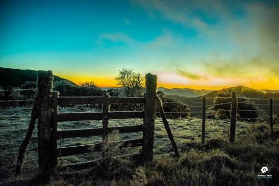

História de Urupema
Fundade em 25 de março de 1918 e emancipada politicamente em 4 de janeiro de 1988.
- Origem: Origem do Povoado: O local começou como o Povoado de Sant'Ana, fundado em 25 de março de 1918 por Manoel Pereira de Medeiros.
- Distrito: Tornou-se o Distrito de Sant'Ana em 27 de outubro de 1923, vinculado ao município de São Joaquim, e foi instalado em 14 de julho de 1924.
